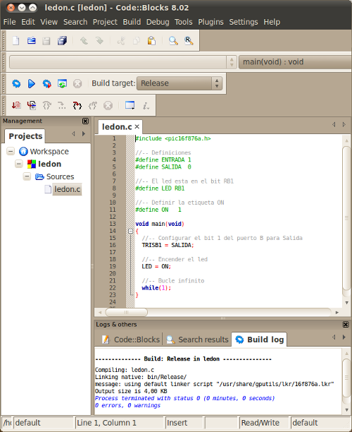

He escrito
un mini-tutorial sobre cómo configurar el codeblocks para programar los microcontroladores PIC en lenguaje C,
para usarlo con las tarjetas Skypic,
Skycube o similares.
El Code::Blocks es un IDE libre y multiplataforma
para la programación en C/C++ que incluye soporte para el compilador
SDCC.

Además de ser sencillo de utilizar, es muy potente y lo más importante: lo puede usar cualquier usuario con independencia del sistema operativo utilizado.
En este pantallazo se puede ver el Code::Blocks en acción en una máquina windows XP:

Miguel Ángel Berna, a través de la lista Skylist, ha reportado que también funciona perfectamente en Windows 7.